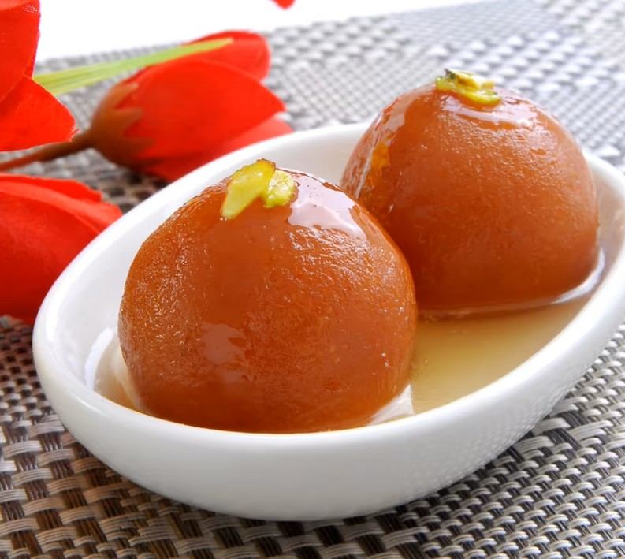

Gulab Jamun
Ingredients
Recipe
- Syrup: Boil sugar, water, cardamom for 8 mins. Add rose water + lemon juice.
- Dough: Mix dry ingredients, add ghee + milk. Make soft dough, rest 10 min.
- Shape: Roll small crack-free balls.
- Fry: Deep fry on low heat until golden brown.
- Soak: Add fried balls to warm syrup. Let soak 2 hrs.

Kaju Katli (Cashew Barfi)
Ingredients
Recipe
- Grind 1 cup cashews into a fine powder without releasing oil.
- Grind 1 cup cashews into a fine powder without releasing oil.
- Add the cashew powder to the syrup and cook on low flame for 5 to 7 minutes, stirring continuously until it forms a soft dough.
- Let the mixture cool slightly, then knead it gently using 1 tsp ghee until smooth.
- Roll the dough between parchment paper to 1/4 inch thickness.
- Apply edible silver leaf (optional) and cut into diamond shapes.
- Cool completely and store in an airtight container.